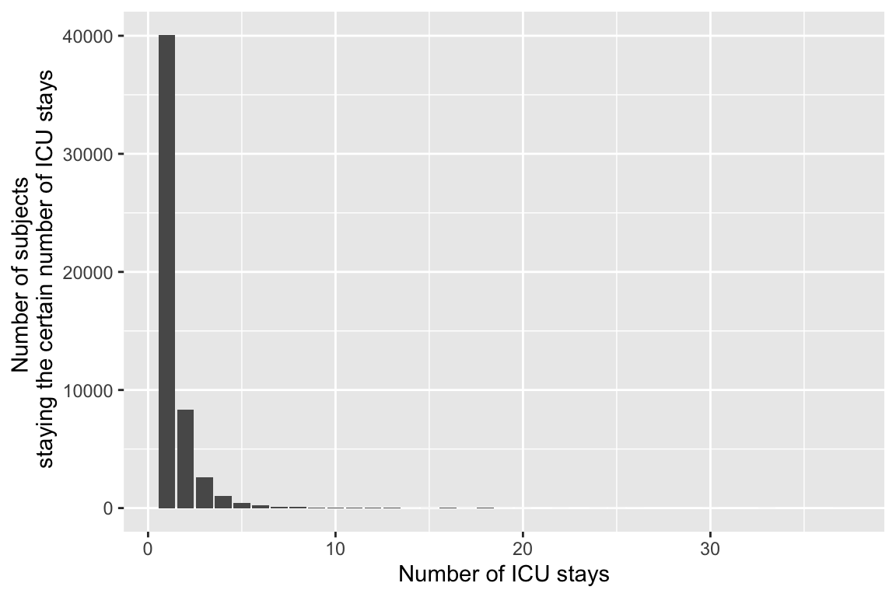
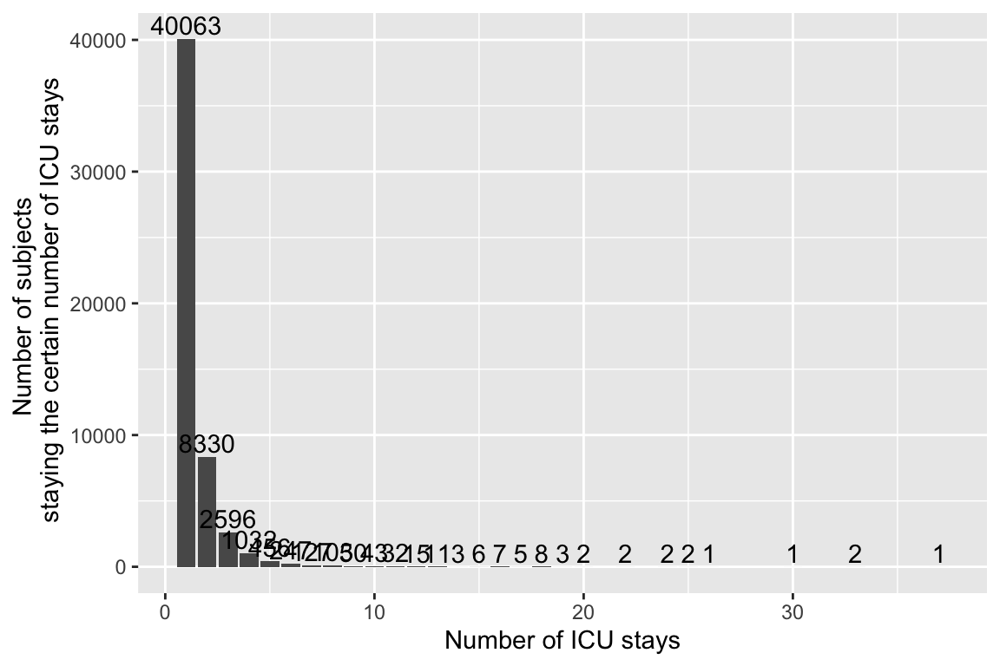
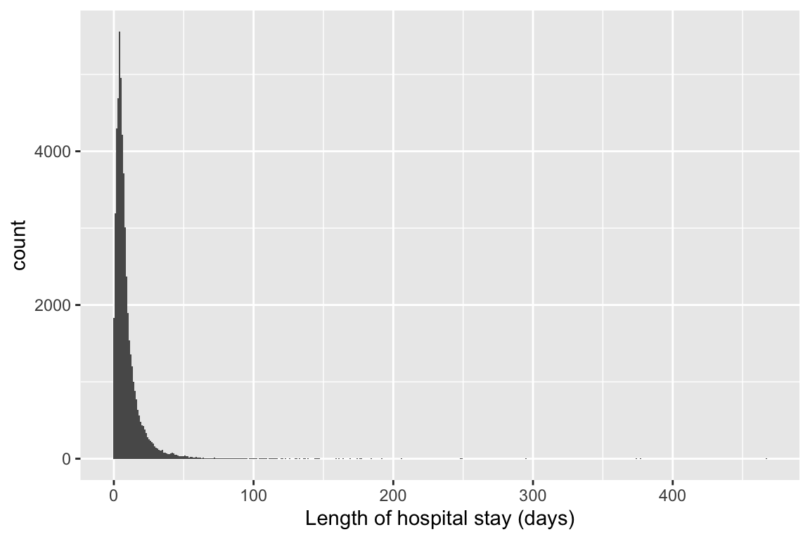
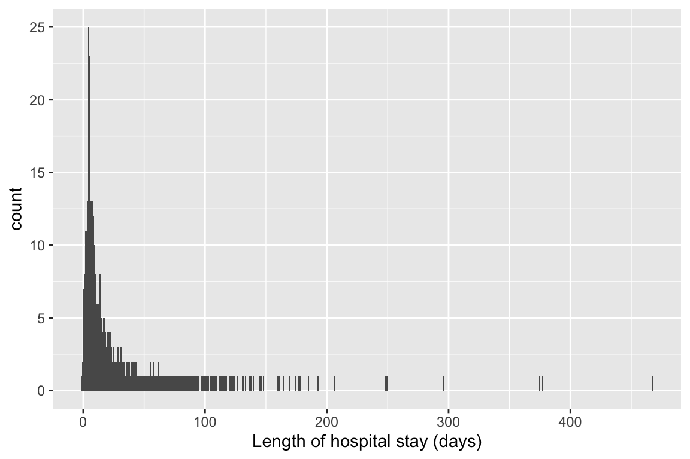
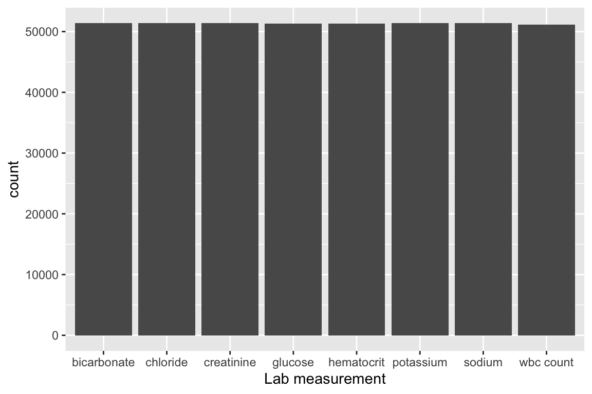

1 Q1. read.csv (base R) vs read_csv (tidyverse) vs fread (data.table)
There are quite a few utilities in R for reading plain text data files. Let us test the speed of reading a moderate sized compressed csv file, admissions.csv.gz, by three programs: read.csv in base R, read_csv in tidyverse, and fread in the popular data.table package.
Which function is fastest? Is there difference in the (default) parsed data types? (Hint: R function system.time measures run times.)
For later questions, we stick to the read_csv in tidyverse.
When using read.csv, the file is read in as a data frame. The data formats of the columns within the data frame are integer (int) (subject_id, hadm_id, hospital_expire_flag) and character (chr) (admittime, dischtime, deathtime, admission_type, admission_location, discharge_location, insurance, language, marital_status, ethnicity, edregtime, edouttime).
When using read_csv, the file’s read-in format can be regarded as spec_tbl_df, tbl_df, tbl (tibble), or data frame. The data format of the columns within the tibble are called numeric (num), character (chr), and POSIXct. POSIXct is the data format for date and time (admittime, dischtime, deathtime, edregtime, edouttime). It stores date and time in seconds with the number of seconds beginning at 1 January 1970.
When using fread, the file’s read-in format can be regarded as data table or data frame. The data formats of the columns are integer (int), character (chr), and POSIXct.
The numeric and integer formats are interchangeable for the columns with pure number values. Date and time values are either regarded as character when using read.csv, or recorded in the POSIXct format specific for date and time when the file is being imported using read_csv or fread. Columns with normal texts are always in the character format regardless of importing method.
Yes, a subject_id can have multiple ICU stays. As demonstrated by the first 10 ids here, some of them have more than 1 ICU stays.
Summarize the number of ICU stays per subject_id by graphs.
stays <- icustays_tble %>%group_by(subject_id) %>%summarize(stay_count =n()) ggplot(data = stays) +geom_bar(mapping =aes(x = stay_count)) +xlab("Number of ICU stays") +ylab("Number of subjects \n staying the certain number of ICU stays")

Since the majority of subjects only had one ICU stay, it is hard to see those with more stay on the graph.
I thus also tried showing the actual numbers of subjects having certain number of ICU stays on top of each bar in the histogram, but the result is not very pretty either (but at least we can see those having a large number of stays):
count <- stays %>%group_by(stay_count) %>%summarize(subject_count =n())ggplot(count, aes(x = stay_count, y = subject_count)) +geom_bar(stat ="identity") +geom_text(aes(label = subject_count, vjust =-0.25)) +xlab("Number of ICU stays") +ylab("Number of subjects \n staying the certain number of ICU stays")

For each subject_id, let’s only keep the first ICU stay in the tibble icustays_tble. (Hint: slice_min and slice_max may take long. Think alternative ways to achieve the same function.)
We can see a peak at 0 am and 7 am. The peak at 7 am is especially unusual, as the admission count for the nearby hours are all pretty low. Maybe less staff are present in the early morning, so admission information is not recorded immediately. Rather, most admissions around 5 ~ 10 am probably got recorded by the staff at 7 am (shift change-over time?).
We can see four very distinct peaks at 0, 15, 30, and 45 minute. This is probably because sually the staffs like to use the numbers ending in 0 and 5 when recording admission. (People like to use whole numbers/ numbers ending in 0 or 5 in general).
- length of hospital stay (anything unusual?)
I drew two different graphs:
ggplot(data = admissions_tble) +geom_bar(mapping =aes(x =as.integer(difftime(dischtime, admittime, units ="days"))), width =1) +xlab("Length of hospital stay (days)")

ggplot(data = admissions_tble) +geom_bar(mapping =aes(x =difftime(dischtime, admittime, units ="days")), width =1) +xlab("Length of hospital stay (days)")
Warning: position_stack requires non-overlapping x intervals

In the first graph, all the bars are near the left coner yet the x-axis still goes to more than 400. This might seem odd, but I assume this is due to there are a few people who had very long hospital stay.
This hypothesis can be supported by the second graph- we can see there are several people with very long hospital stays. In the second graph, the highest count for each length of hospital stay in the unit of days is no more than 25, which might seem odd. But this is because the length of hospital stay is treated as a continuous variable in the second graph, so it is hard for a lot of people to have exact same hospital stay length.
patients_tble <-read_csv("~/mimic/core/patients.csv.gz") %>%semi_join(icustays_tble, by ="subject_id")patients_tble
# A tibble: 53,150 × 6
subject_id gender anchor_age anchor_year anchor_year_group dod
<dbl> <chr> <dbl> <dbl> <chr> <date>
1 10018928 F 31 2125 2008 - 2010 NA
2 10076543 F 78 2187 2008 - 2010 NA
3 10098428 F 85 2119 2008 - 2010 NA
4 10127185 M 60 2141 2008 - 2010 NA
5 10148710 M 67 2137 2008 - 2010 NA
6 10156486 F 75 2124 2017 - 2019 NA
7 10159585 M 59 2146 2008 - 2010 2154-04-16
8 10171525 F 27 2115 2014 - 2016 NA
9 10196360 M 57 2118 2011 - 2013 NA
10 10227823 M 45 2156 2014 - 2016 NA
# … with 53,140 more rows
Summarize variables gender and anchor_age, and explain any patterns you see.
table(patients_tble$gender)
F M
23353 29797
summary(patients_tble$anchor_age)
Min. 1st Qu. Median Mean 3rd Qu. Max.
18.00 53.00 65.00 63.51 77.00 91.00
There are slightly more male than female patients. The mean anchor age for all patients is around 63.5 with a median of 65. Male patients generally have a lower anchor age than female patients. The mean anchor age for male is 62.5 with a median of 64, whereas the mean anchor age for female is 64.8 with a median of 67. From the histogram we can see the distribution of anchor age is left skewed. There are more patients with older anchor age than younger anchor age. We observed a peak at age 91- we should go back to the codebook and see if 91 is actually an anchor age, or if it is a code for missing value.
I read in labevents_filtered_itemid.csv.gz by read_csv and there are 30198826 lines.
The labevents.csv.gz file was too big for read_csv function but it took a lot less time in bash. I also obtained the number of lines of labevents.csv.gz with bash code:
There are 122103667 lines in the labevents.csv.gz file. The tail -n +2 can cause the command to not count the title row, thus if I were to be able to count the rows of labenets.csv.gz using R code I would have got the same number: 122103667.
We are interested in the lab measurements of creatinine (50912), potassium (50971), sodium (50983), chloride (50902), bicarbonate (50882), hematocrit (51221), white blood cell count (51301), and glucose (50931). Retrieve a subset of labevents.csv.gz only containing these items for the patients in icustays_tble as a tibble labevents_tble.
Hint: labevents.csv.gz is a data file too big to be read in by the read_csv function in its default setting. Utilize the col_select option in the read_csv function to reduce the memory burden. It took my computer 5-10 minutes to ingest this file. If your computer really has trouble importing labevents.csv.gz, you can import from the reduced data file labevents_filtered_itemid.csv.gz.
ggplot(labevents_tble) +geom_bar(mapping =aes(x = itemcode, y = ..count..)) +xlab("Lab measurement")

The table and histogram above show how many of each lab measurements are in labevents_tble. Based on the numbers it seems like almost everyone had all of the 8 lab measurements measured during their ICU stay.
6 Q6. Vitals from charted events
chartevents.csv.gz (https://mimic.mit.edu/docs/iv/modules/icu/chartevents/) contains all the charted data available for a patient. During their ICU stay, the primary repository of a patient’s information is their electronic chart. The itemid variable indicates a single measurement type in the database. The value variable is the value measured for itemid. The first 10 lines of chartevents.csv.gz are
We are interested in the vitals for ICU patients: heart rate (220045), mean non-invasive blood pressure (220181), systolic non-invasive blood pressure (220179), body temperature in Fahrenheit (223761), and respiratory rate (220210). Retrieve a subset of chartevents.csv.gz only containing these items for the patients in icustays_tble as a tibble chartevents_tble.
Hint: chartevents.csv.gz is a data file too big to be read in by the read_csv function in its default setting. Utilize the col_select option in the read_csv function to reduce the memory burden. It took my computer >15 minutes to ingest this file. If your computer really has trouble importing chartevents.csv.gz, you can import from the reduced data file chartevents_filtered_itemid.csv.gz.
Further restrict chartevents_tble to the first vital measurement during the ICU stay.
Summarize these vital measurements by appropriate numerics and graphics.
7 Q7. Putting things together
Let us create a tibble mimic_icu_cohort for all ICU stays, where rows are the first ICU stay of each unique adult (age at admission > 18) and columns contain at least following variables
all variables in icustays.csv.gz
all variables in admission.csv.gz
all variables in patients.csv.gz
first lab measurements during ICU stay
first vital measurements during ICU stay
an indicator variable thirty_day_mort whether the patient died within 30 days of hospital admission (30 day mortality)
8 Q8. Exploratory data analysis (EDA)
Summarize following information using appropriate numerics or graphs.
thirty_day_mort vs demographic variables (ethnicity, language, insurance, marital_status, gender, age at hospital admission)